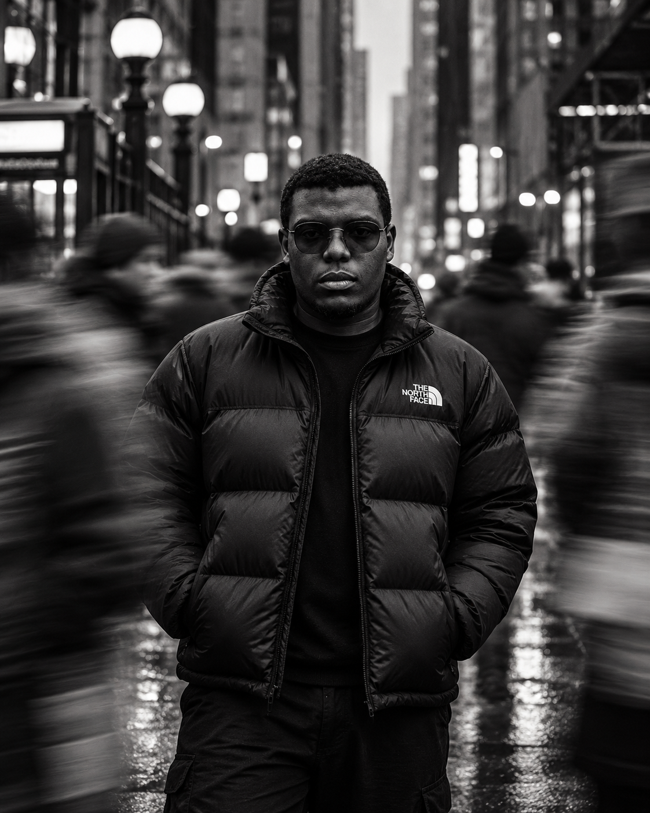

Infância
Nascido e criado em Petrópolis
Nasci aqui, cresci aqui e continuo aqui. Desde pequeno era apaixonado por tecnologia e já sabia que queria crescer nessa área.
oi, prazer!
Tenho 19 anos e sou de Petrópolis. Gosto de tecnologia, design, música, livros e gente. Esse site não é currículo: é pra você me conhecer do jeito que eu sou.

Eu sei como é não ser visto do jeito certo.
Tive uma infância simples aqui em Petrópolis. Não tinha luxo, mas graças a Deus nunca faltou o essencial. A escola foi mais difícil: sofri bullying desde o 4º ano do fundamental, e isso me ensinou muito cedo o peso que a imagem tem na vida de alguém.
Talvez seja por isso que eu goste tanto do que faço hoje. Design, comunicação e tecnologia são as ferramentas que eu uso pra ajudar pessoas, igrejas e pequenos negócios a serem vistos como realmente são.
Nasci aqui, cresci aqui e continuo aqui. Desde pequeno era apaixonado por tecnologia e já sabia que queria crescer nessa área.
Música por uns 11 anos, curso de desenho com certificado, karatê, taekwondo, inglês. Eu queria aprender de tudo um pouco, e muita coisa ficou comigo até hoje.
(nas lutas eu nunca passei da 2ª faixa kkk)
Fui membro do grêmio por dois anos e meio. Foi onde aprendi a representar outras pessoas, organizar coisas e falar em público. Experiências incríveis.
Comecei editando vídeos, sem contrato, simples e caseiros. Mas eu caprichava, e ver a cliente feliz com o resultado foi o primeiro gostinho de trabalhar com criação.
Fiz o curso técnico e comecei a criar artes pra igrejas e pra @pedagogicaconsultoria. Eu ainda não chamava aquilo de carreira, mas já estava fazendo design.
Entrei na FAETERJ Petrópolis e comecei a estagiar no Laboratório de Mídias Digitais da própria faculdade. Foi ali que descobri que design e publicidade eram o meu lugar.
Fundei a Codon, minha agência de estratégia digital, e hoje curso duas faculdades ao mesmo tempo. Cansa, mas é o que eu sempre quis estar fazendo.
e isso é só o começo →
E ver ela evoluir um pouco mais a cada dia, cliente por cliente, projeto por projeto.
Tecnologias da Informação e Comunicação, a área que eu sonhava desde criança.
Junto com a agência, o estágio e a igreja. A agenda é apertada, mas eu dou conta.
Cerca de 11 anos de estudo
Onde o olhar pro visual começou
A base de tudo que faço com código
Estratégia antes da estética
Comunicar com todo mundo importa
Pra ler, estudar e trabalhar sem barreira
foi bom enquanto durou
mesmo destino kkk
Boa parte de quem eu sou foi formada ali: liderar, ensinar, servir e trabalhar em equipe. Foi também onde fiz muitos dos meus primeiros trabalhos de design.

Amo ler de tudo. E gosto ainda mais quando conheço o escritor: dá uma carinha extra pro livro.
sempre tem um livro na filaSpotify e YouTube sempre abertos, com playlists que vão de um lado ao outro. Eu amo cada uma delas.
Tenho tentado evoluir na academia. Ainda não tô com muito êxito, mas sigo indo.
carregando... kkkA Codon é minha agência de estratégia digital. Ajudo pequenos negócios com marca, redes sociais, sites e ferramentas digitais.
É onde a tecnologia que eu amo desde criança encontra o design que eu descobri no estágio. Tudo que eu vivi até aqui acaba aparecendo no trabalho.
Conhecer a Codon ↗